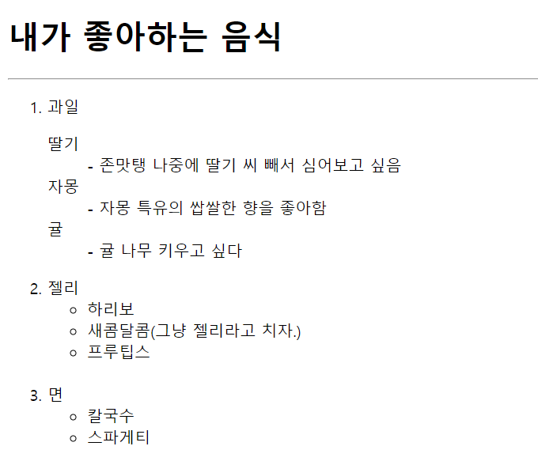

: 항목들을 나열하는데 사용
1. 번호 있는 리스트 <ol></ol>
1) type 속성 : 인덱스의 종류 조절 가능 ex. <ol type="a">
2) start 속성 : 인덱스 중간 번호부터 시작 가능 ex. <ol start="3">
3) reversed 속성 : 인덱스를 역순으로 표시 가능 ex. <ol reversed>
2. 번호 없는 리스트 <ul></ul>
3. 정의 리스트 <dl></dl>
4. 리스트 각 항목 <li></li>
1) <dl> : 설명목록의 시작과 끝
2) <dt> : 용어 부분
3) <dd> : 용어에 대한 설명 부분
5. 예제 ;
